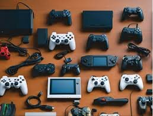

Esta é a terceira página.
A Faculdade Municipal de Palhoça (FMP) organizou o evento FMP Gamer, no dia 31, entre as 9h e as 15h, na sede da instituição (Rua João Pereira dos Santos, 99, na Ponte do Imaruim). Gratuita e aberta à comunidade, a programação é bem variada e voltada para o universo dos jogos eletrônicos. Os visitantes poderão acompanhar uma exposição de consoles, com amostras de videogames de vários fabricantes e de diferentes gerações. Outra exposição que fará parte do evento é formada por projetos práticos desenvolvidos por alunos do curso de Análise e Desenvolvimento de Sistemas utilizando o Arduino, uma plataforma programável de prototipagem eletrônica que permite aos usuários criar objetos eletrônicos interativos e independentes. Quem visitar o FMP Gamer também poderá assistir aos duelos nos campeonatos de fliperama programados para o evento, em jogos como Fifa e Mortal Kombat. Uma curiosidade: os próprios universitários desenvolveram uma máquina de fliperama, que hoje está à disposição dos alunos na faculdade. O FMP Gamer também vai contar com uma feirinha com objetos gamer, um concurso de cosplay e a apresentação de uma banda de rock, que deve acontecer entre 11h e meio-dia.
Voltar para a Página 1